Ben Roberts (UQ) — 2026 —
broberts.io/slides
# Hunting Ghosts in the Ice ## _Francis Halzen, the IceCube neutrino observatory and the 2026 Nobel Prize in Physics_ <br> <br> <br> <div style="display: flex; justify-content: center; align-items: center; gap: 60px"> <div style="width: 32%; text-align: center"> <img src="img/Halzen.jpg" style="width: 100%; margin: 0 auto 1px auto"><br> <font size="3" class="credit">[<a href="https://news.wisc.edu/university-of-wisconsin-madison-professor-francis-halzen-named-2026-nobel-laureate-in-physics/">news.wisc.edu</a>]</font> <h4 style="margin: 6px 0 0 0">Francis Halzen</h4> </div> <img src="img/nobel-medal.png" style="height: 240px; margin: 0; background: none; border: none"> <div style="width: 22%; text-align: center; position: relative; top: 47px"> <!-- top: shifts Bert & Ernie down; tune to align names --> <img src="img/Bert_and_Ernie.jpeg" style="width: 100%; margin: 0 auto 1px auto"><br> <font size="3" class="credit">[Sesame Street]</font> <h4 style="margin: 6px 0 0 0">Bert and Ernie</h4> </div> </div> <br> <br> <!-- <br> --> #### Benjamin M. Roberts _School of Mathematics and Physics, University of Queensland, Australia_ <br> <div style="font-size: 0.8em">Physics Colloquium — 6 November 2026</div> <br> <div class="credit" style="font-size: 0.4em">Image: [IceCube / Martin Wolf, 2017]</div>
# The Standard Model <div style="text-align: center; float: right; width: 48%"> <br> <p>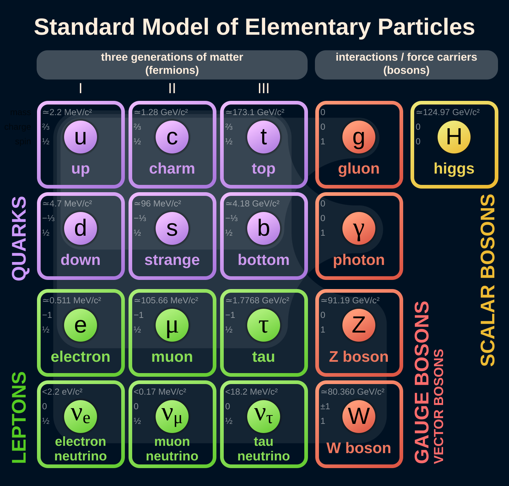</p> <div style="font-size: 16px; line-height: 1.2"><font size="3" class="credit">[Cush / Wikimedia Commons]</font></div> </div> <div style="text-align: left; float: left; width: 50%"> <br> <br> <h3 style="margin: 0 0 6px 0"><b>Our best theory of matter and forces</b></h3> <h4 style="margin: 0 0 0px 0"> • 12 matter particles: 6 quarks and 6 leptons</h4> <h4 style="margin: 0 0 0px 0"> • Forces carried by the photon, gluons, $W$ and $Z$; plus the Higgs</h4> <h4 style="margin: 0 0 10px 0"> • Tested to extraordinary precision</h4> <br> <div class="fragment"> <h3 style="margin: 0 0 6px 0"><b>The neutrino is one of them</b></h3> <h4 style="margin: 0 0 0px 0"> • The bottom row: $\nu_e$, $\nu_\mu$, $\nu_\tau$</h4> <h4 style="margin: 0 0 10px 0"> • One partner for each charged lepton: $e$, $\mu$, $\tau$</h4> </div> </div>
# History of neutrinos ### _(our point of view)_ <div style="text-align: center; float: right; width: 42%; position: relative; top: -40px"> <!-- top: raises the image column; more negative = higher --> <br> <br> <div class="r-stack"> <!-- Beta spectrum of RaE (210Bi), decay diagram overlaid top right (index 1); the Fermi block appears BELOW it (index 3); both until the telegram (index 4) --> <!-- Overlay position/size: top / right / width on the decay-diagram img --> <div class="fragment fade-out" data-fragment-index="4" style="width: 100%"> <div class="fragment fade-in" data-fragment-index="1"> <div style="position: relative; width: 85%; margin: 15px auto 1px auto"> <img src="img/Beta_spectrum_of_RaE_inverted.png" style="width: 90%; margin: 0px"> <img src="img/Beta-minus_Decay_wiki.png" style="position: absolute; top: 3%; right: 3%; width: 47%; margin: 0"> </div> <div style="font-size: 16px; line-height: 1.2"><font size="3" class="credit"> [F Klemm + Inductiveload/ Wikimedia Commons] </font></div> </div> <div class="fragment fade-in" data-fragment-index="3"> <div style="display: flex; justify-content: center; gap: 40px"> <div> <br> <img src="img/Enrico_Fermi_1943-49_DeptEnergy.jpg" style="height: 300px; margin: 0px auto 0px auto"> <div style="font-size: 16px; line-height: 1.2"><font size="3" class="credit">[US Dept. of Energy]</font></div> </div> <!-- right column spans the Fermi photo: equation at its top, image at its bottom --> <div style="height: 320px; margin-top: 15px; display: flex; flex-direction: column; justify-content: space-between; align-items: center"> <br> <div>\[\mathcal{L}_{\rm F} = -G_F\,(\bar\psi_p\gamma^\mu\psi_n)(\bar\psi_e\gamma_\mu\psi_\nu)\]</div> <img src="img/fermi-vs-W.svg" style="height: 220px; margin: 0"> </div> </div> </div> </div> <!-- Cowan & Reines photo (index 4), telegram below one click later (index 5); both until parity (index 6) --> <div class="fragment fade-out" data-fragment-index="6" style="width: 100%"> <div class="fragment fade-in" data-fragment-index="4"> <p>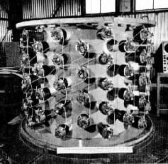</p> <div style="font-size: 16px; line-height: 1.2"><font size="3" class="credit">Cowen & Reines Scintillator [Los Alamos Nat. Lab.]</font></div> <div class="fragment fade-in" data-fragment-index="5"> <img src="img/telegram.jpg" width="85%" style="margin: 15px auto 1px auto"> <div style="font-size: 16px; line-height: 1.2"><font size="3" class="credit">[Reines & Cowan to Pauli, June 1956: CERN Pauli Archive]</font></div> </div> </div> </div> <!-- Parity violation, 1957 (index 5) until 1962 (index 6): Lee & Yang + Wu side by side above, NIST experiment concept below --> <div class="fragment fade-out" data-fragment-index="7" style="width: 100%"> <div class="fragment fade-in" data-fragment-index="6"> <div style="display: flex; justify-content: center; gap: 20px"> <div style="width: 30%"> <img src="img/LeeYang.jpeg" style="width: 100%; margin: 0px auto 1px auto"> <div style="font-size: 13px; line-height: 1.2"><font size="2" class="credit">[U. Chicago]</font></div> </div> <div style="width: 30%"> <img src="img/Chien-shiung_Wu.jpg" style="width: 100%; margin: 0px auto 1px auto"> <div style="font-size: 13px; line-height: 1.2"><font size="2" class="credit">[Columbia]</font></div> </div> </div><br> <img src="img/NISTWuExperimentConcept.jpg" width="35%" style="margin: 15px auto 1px auto"> <div style="font-size: 13px; line-height: 1.2"><font size="2" class="credit">[Smithsonian]</font></div> </div> </div> <!-- More flavours, 1962 (index 6) until Sun/SN1987A (index 7): Schwartz + spark chamber above, AGS below --> <div class="fragment fade-out" data-fragment-index="8" style="width: 100%"> <div class="fragment fade-in" data-fragment-index="7"> <div style="width: 40%; margin: 0 auto"> <img src="img/MelvinSchwartz.webp" style="width: 100%; margin: 0px auto 1px auto"> <div style="font-size: 16px; line-height: 1.15"><font size="3">Melvin Schwartz with the 10-ton spark chamber, showing a multiple exposure of cosmic-ray muon tracks.</font> <font size="1" class="credit">[Brookhaven Nat. Lab.]</font></div> </div> <img src="img/AGS.png" width="100%" style="margin: 15px auto 1px auto"> </div> </div> <!-- Homestake, 1968 (index 8) until SN1987A (index 9): two images stacked --> <div class="fragment fade-out" data-fragment-index="9" style="width: 100%"> <div class="fragment fade-in" data-fragment-index="8"> <p>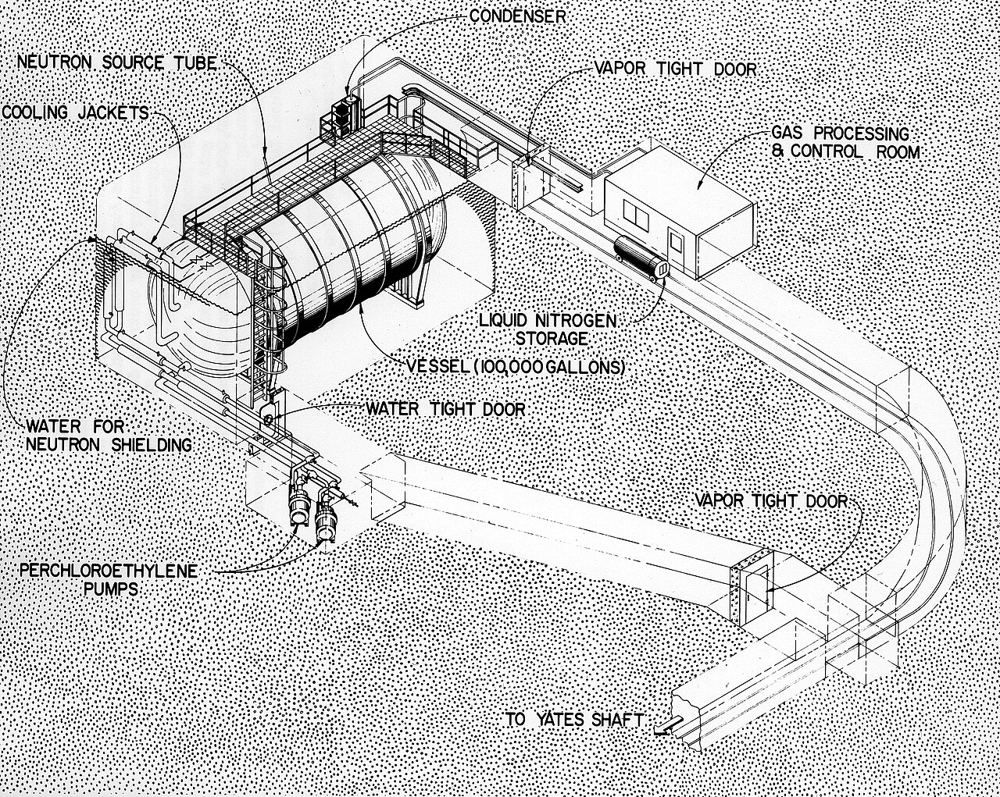</p> <div style="font-size: 16px; line-height: 1.2"><font size="3" class="credit">[Brookhaven Nat. Lab.]</font></div> <p>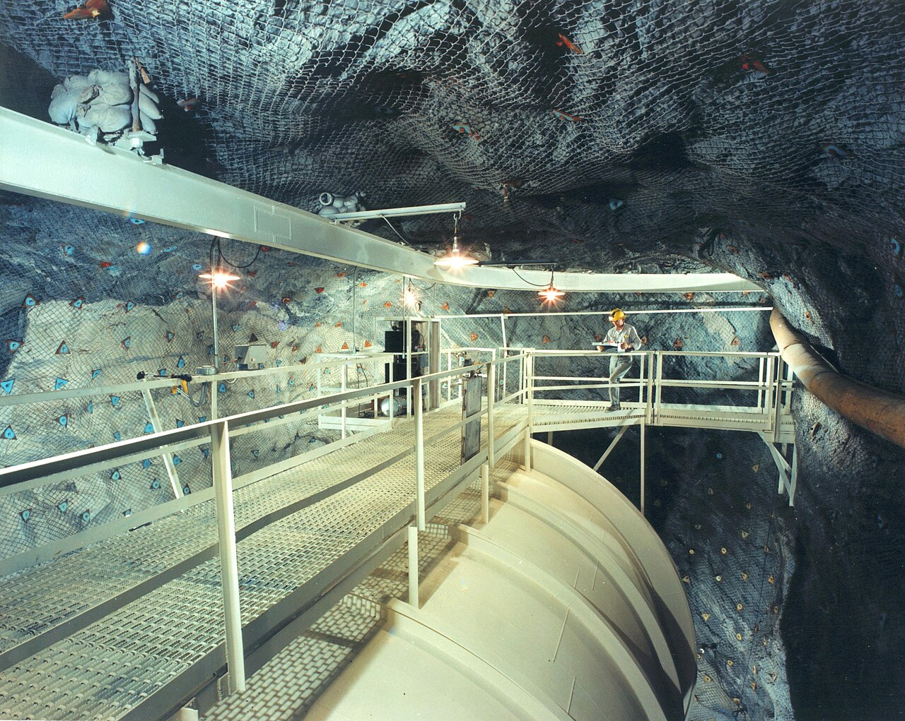</p> <div style="font-size: 16px; line-height: 1.2"><font size="3" class="credit">[US Dept. Energy]</font></div> </div> </div> <!-- SN1987A: Hubble image above, Kamiokande-II + PRL plot below; 1987 (index 9) until Super-K (index 10) --> <div class="fragment fade-out" data-fragment-index="10" style="width: 100%"> <div class="fragment fade-in" data-fragment-index="9"> <p>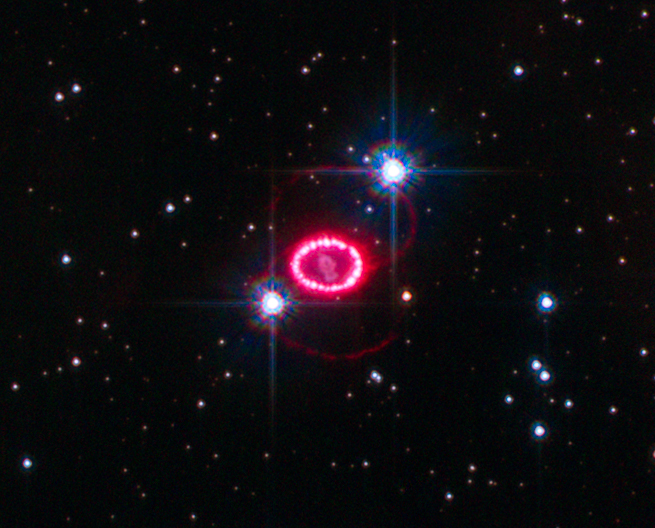</p> <div style="font-size: 16px; line-height: 1.2"><font size="3" class="credit">[Hubble]</font></div> <div style="display: flex; justify-content: center; align-items: center; gap: 20px"> <!-- <p>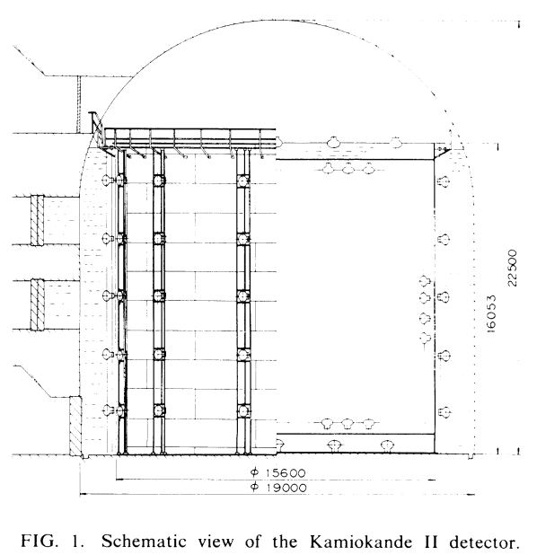</p> --> <img src="img/PhysRevLett.58.1490.png" width="60%" style="margin: 15px 0 1px 0; background: white"> </div><br> <div style="font-size: 16px; line-height: 1.2"><font size="3" class="credit">[Hirata <i>et al.</i>, <a href="https://journals.aps.org/prl/pdf/10.1103/PhysRevLett.58.1490">Phys. Rev. Lett. <b>58</b>, 1490 (1987)</a>]</font></div> </div> </div> <!-- Super-Kamiokande: 1998 (index 10) until IceCube (index 11) --> <div class="fragment fade-out" data-fragment-index="11" style="width: 100%"> <div class="fragment fade-in" data-fragment-index="10"> <p>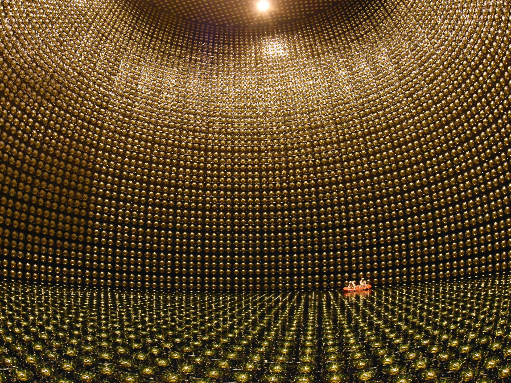</p> <div style="font-size: 16px; line-height: 1.2"><font size="3" class="credit">[Super-Kamiokande]</font></div> </div> </div> <!-- IceCube lab in the ice: 2013 (index 11), replaced by the aurora shot one click later (index 12) --> <div class="fragment fade-out" data-fragment-index="12" style="width: 100%"> <div class="fragment fade-in" data-fragment-index="11"> <div style="font-size: 16px; line-height: 1.2"><font size="3" class="credit">[@icecube, Instagram]</font></div> </div> </div> <!-- IceCube Lab under the aurora, detector diagram below: from index 12 to the end --> <div class="fragment fade-in" data-fragment-index="12" style="width: 100%"> <p>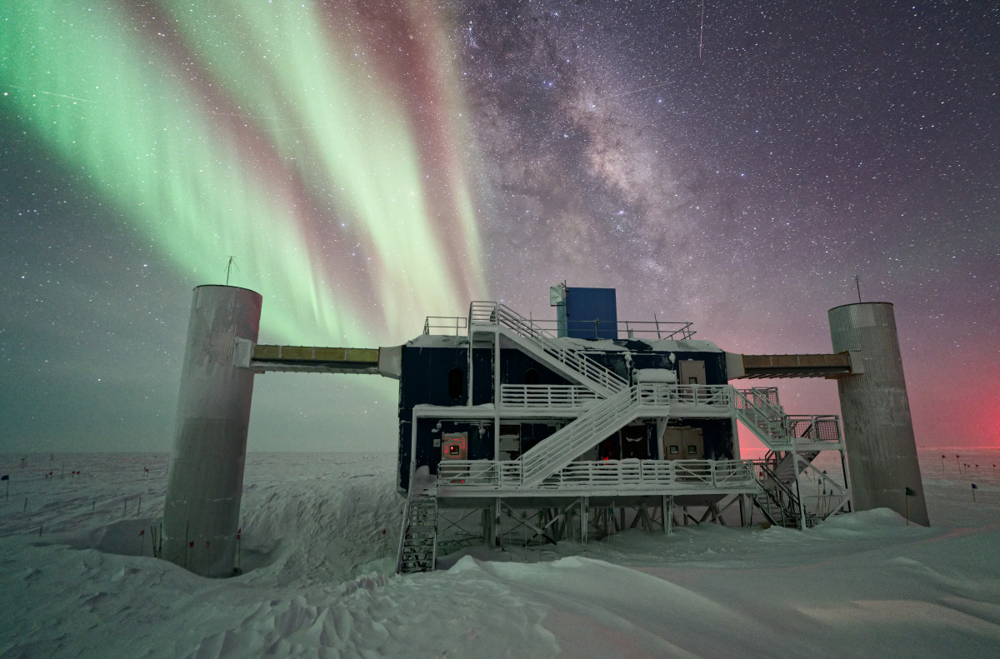</p> <div style="font-size: 16px; line-height: 1.2"><font size="3" class="credit">[Ilya Bodo / IceCube/NSF]</font></div><br> <!-- <p>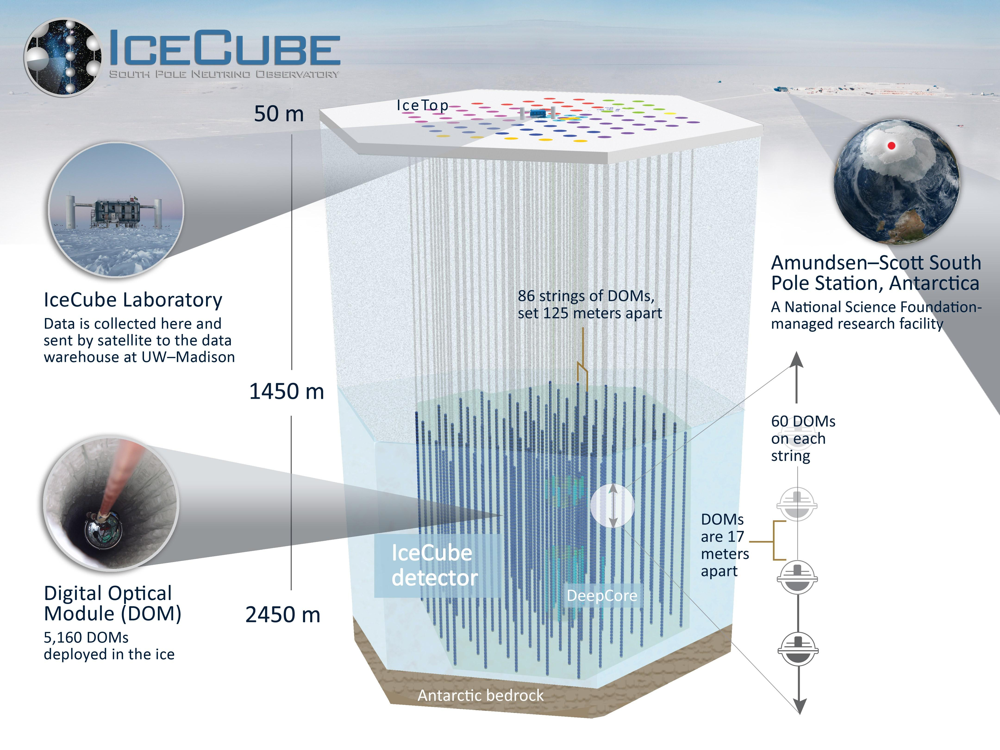</p> <div style="font-size: 16px; line-height: 1.2"><font size="3" class="credit">[icecube.wisc.edu]</font></div> --> </div> </div> </div> <div style="text-align: left; float: left; width: 56%; font-size: 0.75em"> <br> <div class="fragment" data-fragment-index="1"> <h3 style="margin: 0 0 6px 0"><span style="color: cyan">1930</span> <b>Theorised</b> <i>"Dear Radioactive Ladies and Gentlemen, ..."</i></h3> <h4 style="margin: 0 0 0px 0"> • Pauli's "desperate remedy": undetectable neutral particle, explain energy conservation in Bi $\beta$ decay</h4> <h4 class="fragment" data-fragment-index="2" style="margin: 0 0 10px 0"><i style="font-size: 0.9em"> "Unfortunately, I cannot appear in Tubingen personally since I am indispensable here in Zurich because of a ball"</i></h4> </div> <br> <div class="fragment" data-fragment-index="3"> <h3 style="margin: 0 0 6px 0"><span style="color: cyan">1933</span> <b>Fermi theory</b></h3> <h4 style="margin: 0 0 0px 0"> • Fermi's theory of $\beta$ decay [<a href="https://doi.org/10.1007/BF01351864">Z. Phys. <b>88</b>, 161 (1934)</a>] <i style="font-size: 0.8em">(rejected by Nature)</i></h4> <h4 style="margin: 0 0 10px 0"> • Bethe and Peierls: $\sigma \sim 10^{-44}$ cm$^2$, "no practically possible way of observing" [<a href="https://www.nature.com/articles/133532a0">Nature <b>133</b>, 532 (1934)</a>]</h4> </div> <br> <div class="fragment" data-fragment-index="4"> <h3 style="margin: 0 0 6px 0"><span style="color: cyan">1956</span> <b>Detected</b> <img src="img/nobel-medal.png" style="display: inline; height: 1.4em; margin: 0 0.2em 0 0; vertical-align: middle; background: none; border: none"><span style="color: #ccc">1995</span></h3> <h4 style="margin: 0 0 10px 0"> • Reines and Cowan [<a href="https://www.science.org/doi/10.1126/science.124.3212.103">Science (1956)</a>]: reactor $\bar\nu_e$ at Savannah River: $\bar\nu_e + p \to e^+ + n$</h4> </div> <br> <div class="fragment" data-fragment-index="6"> <h3 style="margin: 0 0 6px 0"><span style="color: cyan">1957</span> <b>Parity violation</b> <img src="img/nobel-medal.png" style="display: inline; height: 1.4em; margin: 0 0.2em 0 0; vertical-align: middle; background: none; border: none"><span style="color: #ccc">1957</span></h3> <h4 style="margin: 0 0 0px 0"> • Lee and Yang [<a href="https://journals.aps.org/pr/abstract/10.1103/PhysRev.104.254">Phys. Rev. <b>104</b>, 254 (1956)</a>], C. S. Wu: $^{60}$Co $\beta$ decay [<a href="https://journals.aps.org/pr/abstract/10.1103/PhysRev.105.1413">Phys. Rev. <b>105</b>, 1413 (1957)</a>]</h4> </div> <br> <div class="fragment" data-fragment-index="7"> <h3 style="margin: 0 0 6px 0"><span style="color: cyan">1962</span> <b>Now in more flavours</b> <img src="img/nobel-medal.png" style="display: inline; height: 1.4em; margin: 0 0.2em 0 0; vertical-align: middle; background: none; border: none"><span style="color: #ccc">1988</span></h3> <h4 style="margin: 0 0 10px 0"> • $\nu_\mu \neq \nu_e$ at Brookhaven [<a href="https://journals.aps.org/prl/abstract/10.1103/PhysRevLett.9.36">Phys. Rev. Lett. <b>9</b>, 36 (1962)</a>]; doublet structure of leptons</h4> <!-- $\nu_\tau$ at Fermilab (DONUT) in 2000 --> </div> <br> <div class="fragment" data-fragment-index="8"> <h3 style="margin: 0 0 6px 0"><span style="color: cyan">1968, 1987</span> <b>From the Sun and a supernova</b> <img src="img/nobel-medal.png" style="display: inline; height: 1.4em; margin: 0 0.2em 0 0; vertical-align: middle; background: none; border: none"><span style="color: #ccc">2002</span></h3> <h4 style="margin: 0 0 0px 0"> • Davis's Homestake tank ($\nu_e + {}^{37}{\rm Cl} \to {}^{37}{\rm Ar} + e^-$): finds $\tfrac13$ of the predicted $\nu_e$ $\implies$ solar neutrino problem</h4> <h4 class="fragment" data-fragment-index="9" style="margin: 0 0 10px 0"> • SN1987A: $\sim$25 events in 13 s (Kamiokande-II, IMB, Baksan): neutrino astronomy works</h4> </div> <br> <div class="fragment" data-fragment-index="10"> <h3 style="margin: 0 0 6px 0"><span style="color: cyan">1998–2002</span> <b>Oscillating, so massive</b> <img src="img/nobel-medal.png" style="display: inline; height: 1.4em; margin: 0 0.2em 0 0; vertical-align: middle; background: none; border: none"><span style="color: #ccc">2015</span></h3> <h4 style="margin: 0 0 10px 0"> • Super-K (atmospheric) and SNO (solar): flavours change in flight</h4> </div> <br> <div class="fragment" data-fragment-index="11"> <h3 style="margin: 0 0 6px 0"><span style="color: cyan">2013</span> <b>From the cosmos</b> <img src="img/nobel-medal.png" style="display: inline; height: 1.4em; margin: 0 0.2em 0 0; vertical-align: middle; background: none; border: none"><span style="color: #ccc">2026</span></h3> <h4 style="margin: 0 0 10px 0"> • IceCube: TeV–PeV neutrinos from beyond the Galaxy</h4> </div> </div>
# History of neutrinos ### _(their point of view)_ <div style="text-align: left; float: left; width: 56%; font-size: 0.75em"> <br> <div class="fragment"> <h3 style="margin: 0 0 6px 0"><span style="color: cyan">$t < 1$ s</span> <b>In equilibrium</b></h3> <h4 style="margin: 0 0 10px 0"> • $T > 1$ MeV: weak reactions ($\nu\bar\nu \leftrightarrow e^+e^-$, $\nu e \leftrightarrow \nu e$) keep neutrinos thermal with everything else</h4> </div> <br> <div class="fragment"> <h3 style="margin: 0 0 6px 0"><span style="color: cyan">$t \approx 1$ s</span> <b>Freeze-out</b></h3> <h4 style="margin: 0 0 10px 0"> • $\Gamma \sim G_F^2 T^5$ falls below $H \sim T^2/M_{\rm Pl}$: neutrinos decouple and free-stream ever after</h4> </div> <br> <div class="fragment"> <h3 style="margin: 0 0 6px 0"><span style="color: cyan">$t \approx$ few s</span> <b>Left out in the cold</b></h3> <h4 style="margin: 0 0 10px 0"> • $e^+e^-$ annihilation reheats the photons, not the neutrinos: $T_\nu = (4/11)^{1/3}\, T_\gamma$</h4> </div> <br> <div class="fragment"> <h3 style="margin: 0 0 6px 0"><span style="color: cyan">$t \approx 3$ min</span> <b>Set the helium</b></h3> <h4 style="margin: 0 0 10px 0"> • The same weak reactions freeze $n/p \approx 1/7$ $\Rightarrow$ 25% $^4$He by mass (BBN)</h4> </div> <br> <div class="fragment"> <h3 style="margin: 0 0 6px 0"><span style="color: cyan">$\gtrsim 10^8$ yr</span> <b>Stars</b></h3> <h4 style="margin: 0 0 10px 0"> • Two $\nu_e$ per $^4$He made; the Sun emits $2\times10^{38}$ $\nu$/s: 65 billion cross your thumbnail each second</h4> </div> <br> <div class="fragment"> <h3 style="margin: 0 0 6px 0"><span style="color: cyan">Core collapse</span> <b>Supernovae</b></h3> <h4 style="margin: 0 0 10px 0"> • 99% of $3\times10^{53}$ erg leaves as $10^{58}$ neutrinos in $\sim$10 s, and they help drive the explosion</h4> </div> <br> <div class="fragment"> <h3 style="margin: 0 0 6px 0"><span style="color: cyan">Today</span> <b>Cosmic neutrino background</b></h3> <h4 style="margin: 0 0 10px 0"> • $T_\nu \approx 1.95$ K, $\sim$340 cm$^{-3}$; never directly detected, but felt via $N_{\rm eff} \approx 3.04$ (CMB) and structure growth ($\sum m_\nu \lesssim 0.1$ eV)</h4> </div> <br> <div class="fragment"> <h3 style="margin: 0 0 6px 0"><span style="color: cyan">Also</span> <b>Everything else</b></h3> <h4 style="margin: 0 0 10px 0"> • Earth's radioactivity, reactors, cosmic-ray showers, cosmic accelerators (TeV–PeV), and the still-unseen EeV cosmogenic (GZK) flux</h4> </div> <br> <h4 class="fragment" style="margin: 12px 0 0 0"> <b>The most abundant matter particle, and the oldest relic: nothing has touched one since the first second</b></h4> </div> <div style="text-align: center; float: right; width: 42%"> <br> <div style="border: 2px dashed #888; border-radius: 10px; height: 330px; width: 90%; margin: 0 auto 28px auto; display: flex; align-items: center; justify-content: center; color: #aaa; font-size: 0.65em; padding: 0 24px; box-sizing: border-box"> <div>Image 1 — Cosmic-history timeline, with "neutrinos decouple, $t = 1$ s" marked beside "CMB, $t = 380{,}000$ yr"<br>[ESA/Planck or NASA/WMAP "History of the Universe"]</div> </div> <div style="border: 2px dashed #888; border-radius: 10px; height: 330px; width: 90%; margin: 0 auto; display: flex; align-items: center; justify-content: center; color: #aaa; font-size: 0.65em; padding: 0 24px; box-sizing: border-box"> <div>Image 2 — The Sun, imaged in neutrinos (500 days of Super-Kamiokande data)<br>[APOD 5 June 1998, R. Svoboda and K. Gordan (LSU)]</div> </div> </div>
# What is a neutrino? <div style="text-align: center; float: right; width: 42%"> <br> <br> <div style="border: 2px dashed #888; border-radius: 10px; height: 300px; width: 90%; margin: 0 auto 28px auto; display: flex; align-items: center; justify-content: center; color: #aaa; font-size: 0.65em; padding: 0 24px; box-sizing: border-box"> <div>Image 1 — Feynman diagram, charged current: $\nu_\ell + N \to \ell + X$ via $W$ (the outgoing lepton tags the flavour)</div> </div> <div style="border: 2px dashed #888; border-radius: 10px; height: 300px; width: 90%; margin: 0 auto; display: flex; align-items: center; justify-content: center; color: #aaa; font-size: 0.65em; padding: 0 24px; box-sizing: border-box"> <div>Image 2 — Feynman diagram, neutral current: $\nu + N \to \nu + X$ via $Z$ (any flavour)<br>[could extend img/feynman/fermi-vs-W.tex]</div> </div> </div> <div style="text-align: left; float: left; width: 56%; font-size: 0.85em"> <br> <div> <h3 style="margin: 0 0 6px 0"><span style="color: cyan">Neutral</span> <b>Blind to two of the forces</b></h3> <h4 style="margin: 0 0 0px 0"> • No electric charge, no colour: no light, no strong force</h4> <h4 style="margin: 0 0 10px 0"> • Feels only the weak force (and gravity)</h4> </div> <br> <div class="fragment"> <h3 style="margin: 0 0 6px 0"><span style="color: cyan">Light</span> <b>Almost massless</b></h3> <h4 style="margin: 0 0 0px 0"> • $m_\nu \lesssim 1$ eV: under a millionth of the electron's mass</h4> <h4 style="margin: 0 0 10px 0"> • The Standard Model has only left-handed $\nu$, so no mass term: exactly zero. Not quite (later)</h4> </div> <br> <div class="fragment"> <h3 style="margin: 0 0 6px 0"><span style="color: cyan">Weak</span> <b>Two ways to interact</b></h3> <h4 style="margin: 0 0 0px 0"> • $W$ (charged current): $\nu_\ell + N \to \ell + X$; the outgoing lepton tags the flavour</h4> <h4 style="margin: 0 0 10px 0"> • $Z$ (neutral current): $\nu + N \to \nu + X$; any flavour, and the neutrino carries on</h4> </div> </div>
# Why "ghost"? <div style="text-align: center; float: right; width: 42%"> <br> <br> <div style="border: 2px dashed #888; border-radius: 10px; height: 300px; width: 90%; margin: 0 auto 28px auto; display: flex; align-items: center; justify-content: center; color: #aaa; font-size: 0.65em; padding: 0 24px; box-sizing: border-box"> <div>Image 1 — Cartoon: neutrinos streaming straight through the Earth (and you), almost none stopping</div> </div> <div style="border: 2px dashed #888; border-radius: 10px; height: 300px; width: 90%; margin: 0 auto; display: flex; align-items: center; justify-content: center; color: #aaa; font-size: 0.65em; padding: 0 24px; box-sizing: border-box"> <div>Image 2 — $\nu N$ cross-section vs energy, log–log, GeV to EeV: linear rise, softening above $\sim$10 TeV; mark GeV / TeV / PeV<br>[e.g. Formaggio & Zeller, Rev. Mod. Phys. <b>84</b>, 1307 (2012); Connolly, Thorne & Waters, Phys. Rev. D <b>83</b>, 113009 (2011)]</div> </div> </div> <div style="text-align: left; float: left; width: 56%; font-size: 0.8em"> <br> <div> <h3 style="margin: 0 0 6px 0"><span style="color: cyan">Weak</span> <b>They almost never interact</b></h3> <h4 style="margin: 0 0 0px 0"> • Weak because the $W$ and $Z$ are heavy: $G_F \propto g^2/M_W^2$</h4> <h4 style="margin: 0 0 10px 0"> • A typical solar neutrino would cross light-years of lead</h4> </div> <br> <div class="fragment"> <h3 style="margin: 0 0 6px 0"><span style="color: cyan">Invisible</span> <b>You never see the neutrino</b></h3> <h4 style="margin: 0 0 10px 0"> • Only the charged particles it makes, on the rare occasion it hits something: $\nu_\mu + N \to \mu + X$</h4> </div> <br> <div class="fragment"> <h3 style="margin: 0 0 6px 0"><span style="color: cyan">Energy</span> <b>Bigger is easier</b></h3> <div style="font-size: 1.2em"> $$\sigma_{\nu N} \sim \frac{G_F^2\, m_N E_\nu}{\pi} \approx 10^{-38}\,{\rm cm}^2 \times \frac{E_\nu}{\rm GeV}$$ </div> <h4 style="margin: 0 0 0px 0"> • Linear to $\sim$10 TeV, then slower; by $\sim$100 TeV even the Earth starts to stop them</h4> <h4 style="margin: 0 0 10px 0"> • Still: at 1 TeV, fewer than 1 in a million crossing a km of ice interacts</h4> </div> <br> <div class="fragment"> <h3 style="margin: 0 0 6px 0"><span style="color: cyan">So</span> <b>The recipe</b></h3> <h4 style="margin: 0 0 10px 0"> • A huge, cheap, transparent target, darkness, and patience $\Rightarrow$ a cubic kilometre of Antarctic ice</h4> </div> </div>
## The neutrino sky, 24 orders of magnitude in energy <div style="text-align: center; width: 95%; margin: 0 auto"> <p>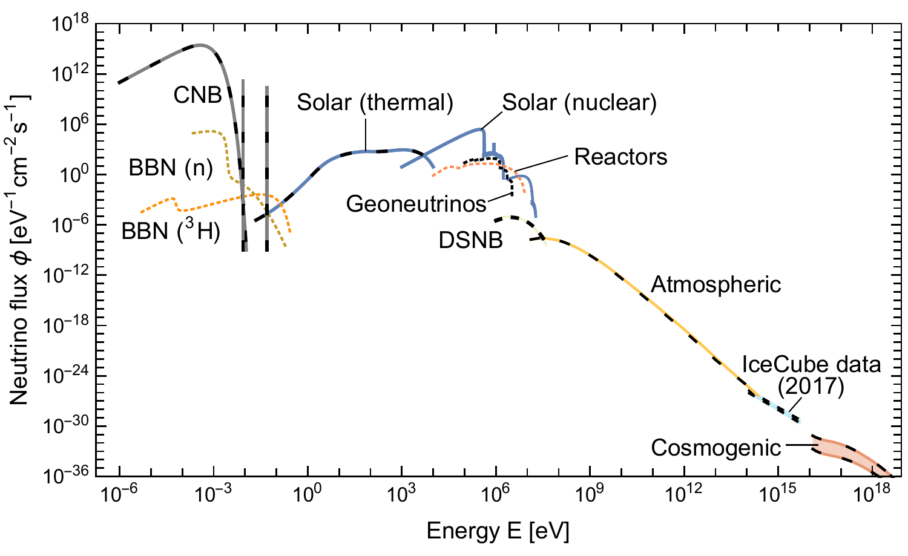</p> <div style="font-size: 16px; line-height: 1.2"><font size="3" class="credit">[Vitagliano, Tamborra & Raffelt, <a href="https://journals.aps.org/rmp/abstract/10.1103/RevModPhys.92.045006">Rev. Mod. Phys. <b>92</b>, 045006 (2020)</a>]</font></div> </div> <br> <div style="text-align: left; width: 75%; margin: 0 auto"> <h3 class="fragment" style="margin: 0 0 6px 0"> • Each source has its own energy: Big Bang (meV), Sun (MeV), supernovae (10 MeV), atmosphere (GeV–TeV), cosmos (TeV–PeV)</h3> <h3 class="fragment" style="margin: 0 0 6px 0"> • IceCube works at the far right, where the flux is lowest: above 100 TeV, about one per m$^2$ per year</h3> <h3 class="fragment" style="margin: 0 0 6px 0"> • So the detectors grow: from 600 tonnes of dry-cleaning fluid (Homestake) to a billion tonnes of ice</h3> </div>
<br><br><br><br><br><br><br><br> # Why neutrinos matter
# The mass puzzle (Nobel 2015) <div style="text-align: center; float: right; width: 42%"> <br> <p>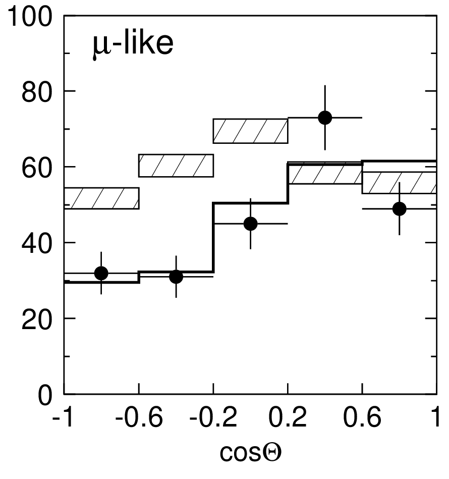</p> <div style="font-size: 16px; line-height: 1.2"><font size="3" class="credit">[Fukuda <i>et al.</i>, <a href="https://journals.aps.org/prl/abstract/10.1103/PhysRevLett.81.1562">Phys. Rev. Lett. <b>81</b>, 1562 (1998)</a>]</font></div> <div class="fragment" data-fragment-index="1"> <p>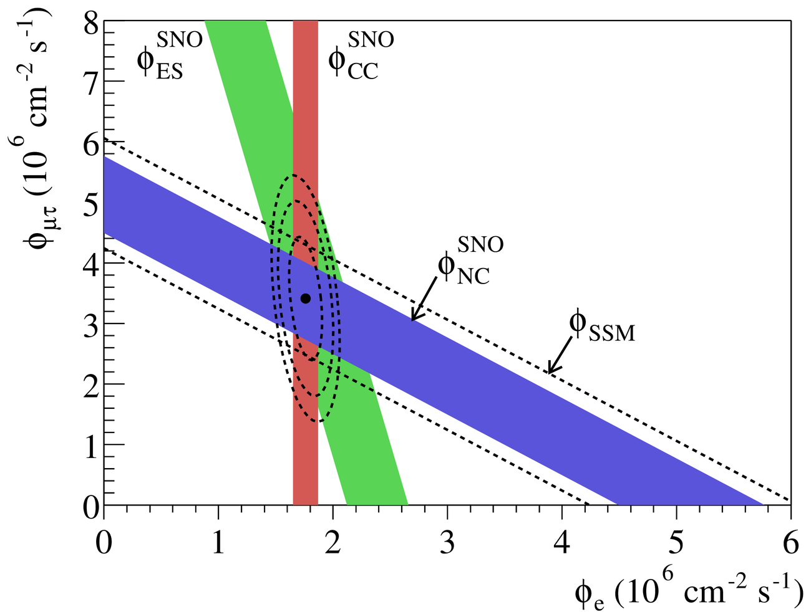</p> <div style="font-size: 16px; line-height: 1.2"><font size="3" class="credit">[Ahmad <i>et al.</i>, <a href="https://journals.aps.org/prl/abstract/10.1103/PhysRevLett.89.011301">Phys. Rev. Lett. <b>89</b>, 011301 (2002)</a>]</font></div> </div> </div> <div style="text-align: left; float: left; width: 56%; font-size: 0.75em"> <br> <div> <h3 style="margin: 0 0 6px 0"><span style="color: cyan">1998</span> <b>Super-K: muon neutrinos go missing</b></h3> <h4 style="margin: 0 0 0px 0"> • From the sky above ($\sim$15 km): as expected. From below, through the Earth ($\sim$13,000 km): nearly half gone</h4> <h4 style="margin: 0 0 10px 0"> • Plot: up-going on the left; boxes = no oscillation, line = oscillation fit</h4> </div> <br> <div class="fragment" data-fragment-index="1"> <h3 style="margin: 0 0 6px 0"><span style="color: cyan">2002</span> <b>SNO: the Sun's missing $\nu_e$ found</b></h3> <h4 style="margin: 0 0 10px 0"> • Only $\tfrac13$ arrive as $\nu_e$, but all flavours together (neutral current) match the solar model: Davis's missing two-thirds arrive as $\nu_\mu$ and $\nu_\tau$</h4> </div> <br> <div class="fragment" data-fragment-index="2"> <h3 style="margin: 0 0 6px 0"><span style="color: cyan">Oscillation</span> <b>Needs mass</b></h3> <h4 style="margin: 0 0 0px 0"> • Flavour states are mixtures of mass states, which drift out of step in flight:</h4> <div style="font-size: 1.2em"> $$P(\nu_\mu\to\nu_\mu) \simeq 1 - \sin^2 2\theta\,\sin^2\!\left(\frac{\Delta m^2 L}{4E}\right)$$ </div> <h4 style="margin: 0 0 10px 0"> • $\Delta m^2_{21} \approx 7.5\times10^{-5}$ eV$^2$, $|\Delta m^2_{31}| \approx 2.5\times10^{-3}$ eV$^2$: at least two neutrinos have mass</h4> </div> <br> <div class="fragment" data-fragment-index="3"> <h3 style="margin: 0 0 6px 0"><span style="color: cyan">Tiny</span> <b>The first crack in the Standard Model</b></h3> <h4 style="margin: 0 0 0px 0"> • KATRIN (tritium $\beta$ decay): $m_\nu < 0.45$ eV [<a href="https://www.science.org/doi/10.1126/science.adq9592">Science <b>388</b>, 180 (2025)</a>]; cosmology: $\sum m_\nu < 0.064$ eV (DESI + CMB, 2025)</h4> <h4 style="margin: 0 0 10px 0"> • The Standard Model says zero: the first laboratory evidence of physics beyond it</h4> </div> </div>
# The open questions <div style="text-align: center; float: right; width: 42%"> <br> <br> <p>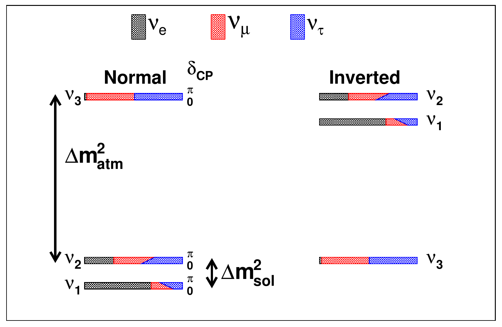</p> <div style="font-size: 16px; line-height: 1.2"><font size="3" class="credit">[Qian & Vogel, <a href="https://doi.org/10.1016/j.ppnp.2015.05.002">Prog. Part. Nucl. Phys. <b>83</b>, 1 (2015)</a>]</font></div> </div> <div style="text-align: left; float: left; width: 56%; font-size: 0.75em"> <br> <div> <h3 style="margin: 0 0 6px 0"><span style="color: cyan">Ordering</span> <b>Which one is lightest?</b></h3> <h4 style="margin: 0 0 0px 0"> • Normal ($m_1 < m_2 < m_3$) or inverted ($m_3$ lightest)? The sign of $\Delta m^2_{31}$</h4> <h4 style="margin: 0 0 0px 0"> • JUNO (reactors, since 2025); atmospheric: Super-K, IceCube DeepCore and Upgrade, KM3NeT/ORCA</h4> <h4 style="margin: 0 0 10px 0"> • Cosmology ($\sum m_\nu < 0.064$ eV) already squeezes the inverted ordering, which needs $\gtrsim 0.1$ eV</h4> </div> <br> <div class="fragment"> <h3 style="margin: 0 0 6px 0"><span style="color: cyan">Majorana?</span> <b>Is it its own antiparticle?</b></h3> <h4 style="margin: 0 0 0px 0"> • The only neutral fermion that could be. Test: neutrinoless double $\beta$ decay, $(A,Z) \to (A,Z+2) + 2e^-$, no neutrinos out</h4> <h4 style="margin: 0 0 10px 0"> • KamLAND-Zen: $T_{1/2} > 10^{26}$ yr ($^{136}$Xe); next, LEGEND-1000, nEXO, CUPID</h4> </div> <br> <div class="fragment"> <h3 style="margin: 0 0 6px 0"><span style="color: cyan">CP</span> <b>Do $\nu$ and $\bar\nu$ oscillate differently?</b></h3> <h4 style="margin: 0 0 0px 0"> • Hints from T2K and NOvA; DUNE and Hyper-Kamiokande to decide</h4> <h4 style="margin: 0 0 10px 0"> • Leptogenesis: CP violation among neutrinos in the early Universe could explain why there is matter at all</h4> </div> <br> <div class="fragment"> <h3 style="margin: 0 0 6px 0"><span style="color: cyan">Seesaw</span> <b>Why so light?</b></h3> <h4 style="margin: 0 0 0px 0"> • $m_\nu \sim m_D^2/M$: with $m_D \sim 100$ GeV and $m_\nu \sim 0.05$ eV, $M \sim 10^{14}$ GeV, near the GUT scale</h4> <h4 style="margin: 0 0 10px 0"> • Tiny masses may be a window onto physics far beyond any collider</h4> </div> </div>
## Why ghosts make the best messengers <br> <div style="text-align: center; float: center; width: 95%"> <img src="../DarkMatter/img/xe-photoel.png" width="55%"><br> <font size="3">[Author <i>et al.</i>, Journal (Year)]</font> </div> <br> <div class="fragment" style="text-align: left; float: center; width: 65%"> <h3> • Dot point one</h3> <h3> • Dot point two</h3> </div>
# The 100-year cosmic-ray question <br> <div style="text-align: left; float: left; width: 50%"> <br> <h2>Heading</h2> <h3> • Dot point one</h3> <h3> • Dot point two</h3> <h3> • Dot point three</h3> <br> <div class="fragment"> <h2>Second heading</h2> <h3> • Dot point one</h3> <h3> • Dot point two</h3> </div> </div> <div style="text-align: center; float: right; width: 50%"> <br> <img src="../DarkMatter/img/xe-photoel.png" width="90%"><br> <font size="3">[Author <i>et al.</i>, Journal (Year)]</font> </div>
<br><br><br><br><br><br><br><br> # IceCube: what it is and how it works
## From Markov's idea to a cubic kilometre <br> <div style="text-align: center; float: center; width: 95%"> <img src="../DarkMatter/img/xe-photoel.png" width="55%"><br> <font size="3">[Author <i>et al.</i>, Journal (Year)]</font> </div> <br> <div class="fragment" style="text-align: left; float: center; width: 65%"> <h3> • Dot point one</h3> <h3> • Dot point two</h3> </div>
# IceCube by the numbers <br> <div style="text-align: left; float: left; width: 50%"> <br> <h2>Heading</h2> <h3> • Dot point one</h3> <h3> • Dot point two</h3> <h3> • Dot point three</h3> <br> <div class="fragment"> <h2>Second heading</h2> <h3> • Dot point one</h3> <h3> • Dot point two</h3> </div> </div> <div style="text-align: center; float: right; width: 50%"> <br> <img src="../DarkMatter/img/xe-photoel.png" width="90%"><br> <font size="3">[Author <i>et al.</i>, Journal (Year)]</font> </div>
# How it sees: Cherenkov light in the clearest ice on Earth <div> <div style="text-align: left; float: left; width: 50%"> <div class="fragment fade-in"> <br> <h3>Left heading</h3> <img src="../DarkMatter/img/xe-photoel.png" width="85%"> <h4> • Dot point one</h4> <h4> • Dot point two</h4> </div> </div> <div style="text-align: left; float: right; width: 50%"> <div class="fragment fade-in"> <br> <h3>Right heading</h3> <img src="../DarkMatter/img/xe-photoel.png" width="85%"> <h4> • Dot point one</h4> <h4> • Dot point two</h4> </div> </div> </div>
# Cherenkov light in IceCube <div style="position: relative; text-align: center"> <!-- TEMP speaker notes beside the video (absolute, so they don't push the video) --> <div style="position: absolute; top: 40px; right: 0; width: 520px; text-align: left; font-size: 0.9em"> <h3 style="margin: 0 0 10px 0">• Grey lines: 86 strings of light sensors</h3> <br> <h3 class="fragment" style="margin: 0 0 10px 0">• Red line: muon from a $\nu_\mu$ hit</h3> <br> <h3 class="fragment" style="margin: 0 0 10px 0">• Blue glow: its Cherenkov light in the ice</h3> <br> <h3 class="fragment" style="margin: 0 0 10px 0">• Sensors fire as light arrives: size = light, colour = time</h3> <br> <h3 class="fragment" style="margin: 0 0 10px 0">• Stray dots: random noise</h3> <br> <h3 class="fragment" style="margin: 0 0 10px 0">• Hit timing $\to$ direction ($\sim$1°)</h3> </div> <!-- video + credit shifted left (left: -140px is ~1/3 of the side gap) to make room for the notes --> <div style="position: relative; left: -140px"> <video data-autoplay muted style="height: 820px; max-width: 100%; margin: 0 auto 1px auto"> <source src="https://res.cloudinary.com/icecube/video/upload/v1602524605/gal_Detector_cherenkov_smaller.mp4" type="video/mp4"> </video> <div style="font-size: 16px; line-height: 1.2"><font size="3" class="credit">[IceCube]</font></div> </div> </div>
# Tracks, cascades, and beating the background ### The shape of the light tells you (mostly) the flavour <div> <div class="fragment fade-in" style="text-align: center; float: left; width: 32%; font-size: 0.8em"> <div style="border: 2px dashed #888; border-radius: 10px; height: 260px; width: 90%; margin: 0 auto 10px auto; display: flex; align-items: center; justify-content: center; color: #aaa; font-size: 0.65em; padding: 0 24px; box-sizing: border-box"> <div>Track event display (e.g. IceCube-170922A, the TXS 0506+056 neutrino)<br>[IceCube]</div> </div> <h3 style="margin: 0 0 6px 0"><b>Track</b></h3> <div style="text-align: left"> <h4 style="margin: 0 0 6px 0">• $\nu_\mu$ makes a muon that travels km</h4> <h4 style="margin: 0 0 6px 0">• Direction: $< 1^\circ$ $\Rightarrow$ astronomy</h4> <h4 style="margin: 0 0 6px 0">• Energy: rough (the muon escapes)</h4> </div> </div> <div class="fragment fade-in" style="text-align: center; float: left; width: 32%; margin-left: 2%; font-size: 0.8em"> <div style="border: 2px dashed #888; border-radius: 10px; height: 260px; width: 90%; margin: 0 auto 10px auto; display: flex; align-items: center; justify-content: center; color: #aaa; font-size: 0.65em; padding: 0 24px; box-sizing: border-box"> <div>Cascade event display (e.g. Ernie, 1.1 PeV)<br>[IceCube]</div> </div> <h3 style="margin: 0 0 6px 0"><b>Cascade</b></h3> <div style="text-align: left"> <h4 style="margin: 0 0 6px 0">• $\nu_e$, most $\nu_\tau$, and neutral-current hits of any flavour</h4> <h4 style="margin: 0 0 6px 0">• Direction: $\sim 10^\circ$</h4> <h4 style="margin: 0 0 6px 0">• Energy: good (all inside)</h4> </div> </div> <div class="fragment fade-in" style="text-align: center; float: right; width: 32%; font-size: 0.8em"> <div style="border: 2px dashed #888; border-radius: 10px; height: 260px; width: 90%; margin: 0 auto 10px auto; display: flex; align-items: center; justify-content: center; color: #aaa; font-size: 0.65em; padding: 0 24px; box-sizing: border-box"> <div>Double-cascade event display (tau-neutrino candidate)<br>[IceCube]</div> </div> <h3 style="margin: 0 0 6px 0"><b>Double cascade</b></h3> <div style="text-align: left"> <h4 style="margin: 0 0 6px 0">• $\nu_\tau$ at PeV: two bursts, $\sim$50 m apart</h4> <h4 style="margin: 0 0 6px 0">• The last flavour seen: 7 candidates (2024)</h4> </div> </div> </div> <div style="text-align: left; float: left; width: 100%; font-size: 0.8em"> <br> <h3 class="fragment" style="margin: 0 0 6px 0"><b>Beating the background:</b> atmospheric muons outnumber neutrinos $\sim 10^6$ to 1</h3> <h4 class="fragment" style="margin: 0 0 6px 0"> • Earth as a filter: a muon coming <i>up</i> must come from a neutrino</h4> <h4 class="fragment" style="margin: 0 0 6px 0"> • Veto: outer sensors flag muons coming in; events that start inside are neutrinos (Bert and Ernie)</h4> </div>
<br><br><br><br><br><br><br><br> # What IceCube found
# 2013: Bert, Ernie, and a new sky <div> <div style="text-align: left; float: left; width: 50%"> <div class="fragment fade-in"> <br> <h3>Left heading</h3> <img src="../DarkMatter/img/xe-photoel.png" width="85%"> <h4> • Dot point one</h4> <h4> • Dot point two</h4> </div> </div> <div style="text-align: left; float: right; width: 50%"> <div class="fragment fade-in"> <br> <h3>Right heading</h3> <img src="../DarkMatter/img/xe-photoel.png" width="85%"> <h4> • Dot point one</h4> <h4> • Dot point two</h4> </div> </div> </div>
# 2017: the first named source <br> <div style="text-align: left; float: left; width: 50%"> <br> <h2>Heading</h2> <h3> • Dot point one</h3> <h3> • Dot point two</h3> <h3> • Dot point three</h3> <br> <div class="fragment"> <h2>Second heading</h2> <h3> • Dot point one</h3> <h3> • Dot point two</h3> </div> </div> <div style="text-align: center; float: right; width: 50%"> <br> <img src="../DarkMatter/img/xe-photoel.png" width="90%"><br> <font size="3">[Author <i>et al.</i>, Journal (Year)]</font> </div>
# Steady sources and the Milky Way in neutrinos <div> <div style="text-align: center; float: left; width: 50%"> <img src="../DarkMatter/img/xe-photoel.png" width="50%"><br> <h4>Caption one</h4> </div> <div style="text-align: center; float: right; width: 50%"> <img src="../DarkMatter/img/xe-photoel.png" width="50%"><br> <h4>Caption two</h4> </div> </div> <div style="clear: both"></div> <div class="fragment"> <div style="text-align: center; float: left; width: 50%"> <img src="../DarkMatter/img/xe-photoel.png" width="50%"><br> <h4>Caption three</h4> </div> <div style="text-align: center; float: right; width: 50%"> <img src="../DarkMatter/img/xe-photoel.png" width="50%"><br> <h4>Caption four</h4> </div> </div>
# Particle physics with an ice cube <div> <div style="text-align: left; float: left; width: 50%"> <div class="fragment fade-in"> <br> <h3>Left heading</h3> <img src="../DarkMatter/img/xe-photoel.png" width="85%"> <h4> • Dot point one</h4> <h4> • Dot point two</h4> </div> </div> <div style="text-align: left; float: right; width: 50%"> <div class="fragment fade-in"> <br> <h3>Right heading</h3> <img src="../DarkMatter/img/xe-photoel.png" width="85%"> <h4> • Dot point one</h4> <h4> • Dot point two</h4> </div> </div> </div>
# Dark matter with an ice cube ### Indirect detection, with a direct-detection payoff <div style="text-align: center; float: right; width: 42%"> <br> <div style="border: 2px dashed #888; border-radius: 10px; height: 330px; width: 90%; margin: 0 auto 28px auto; display: flex; align-items: center; justify-content: center; color: #aaa; font-size: 0.65em; padding: 0 24px; box-sizing: border-box"> <div>Image 1 — Cartoon: dark matter captured in the Sun, sinking to the core and annihilating; only the neutrinos escape to IceCube</div> </div> <div style="border: 2px dashed #888; border-radius: 10px; height: 330px; width: 90%; margin: 0 auto; display: flex; align-items: center; justify-content: center; color: #aaa; font-size: 0.65em; padding: 0 24px; box-sizing: border-box"> <div>Image 2 — Spin-dependent DM–proton cross-section limits vs mass: IceCube (Sun), Super-K, PICO<br>[e.g. IceCube, Eur. Phys. J. C <b>77</b>, 146 (2017)]</div> </div> </div> <div style="text-align: left; float: left; width: 56%; font-size: 0.75em"> <br> <div class="fragment"> <h3 style="margin: 0 0 6px 0"><span style="color: cyan">The Sun</span> <b>A dark matter trap</b></h3> <h4 style="margin: 0 0 0px 0"> • Dark matter scatters off nuclei, loses energy, is captured, and sinks to the core</h4> <h4 style="margin: 0 0 0px 0"> • It builds up and annihilates: only neutrinos escape, at GeV–TeV (fusion gives MeV)</h4> <h4 style="margin: 0 0 10px 0"> • Capture rate $\propto$ scattering cross-section: an <i>indirect</i> search measures a <i>direct-detection</i> quantity</h4> </div> <br> <div class="fragment"> <h3 style="margin: 0 0 6px 0"><span style="color: cyan">Spin</span> <b>Hydrogen is the target</b></h3> <h4 style="margin: 0 0 0px 0"> • The Sun is mostly protons: probes spin-dependent DM–proton scattering</h4> <h4 style="margin: 0 0 10px 0"> • Among the strongest limits there, alongside PICO and Super-K; the Earth's core (iron) probes spin-independent</h4> </div> <br> <div class="fragment"> <h3 style="margin: 0 0 6px 0"><span style="color: cyan">The Galaxy</span> <b>Halo and centre</b></h3> <h4 style="margin: 0 0 10px 0"> • Annihilation or decay anywhere in the Milky Way's halo $\to$ neutrinos: limits on $\langle\sigma v\rangle$</h4> </div> <br> <div class="fragment"> <h3 style="margin: 0 0 6px 0"><span style="color: cyan">PeV</span> <b>Heavy, decaying dark matter</b></h3> <h4 style="margin: 0 0 10px 0"> • Once suggested for the first PeV events; now lifetime $\tau \gtrsim 10^{27}$ s, $10^9\times$ the age of the Universe</h4> </div> </div>
<br><br><br><br><br><br><br><br> # The future, the person, the take-home
# What comes next ### Subheading <br> <div> <div class="fragment fade-in" style="text-align: center; float: left; width: 32%"> <img src="../DarkMatter/img/xe-photoel.png" width="95%"><br> <font size="3">[Source]</font> <h3>Caption one</h3> </div> <div class="fragment fade-in" style="text-align: center; float: left; width: 32%; margin-left: 2%"> <img src="../DarkMatter/img/xe-photoel.png" width="95%"><br> <font size="3">[Source]</font> <h3>Caption two</h3> </div> <div class="fragment fade-in" style="text-align: center; float: right; width: 32%"> <img src="../DarkMatter/img/xe-photoel.png" width="95%"><br> <font size="3">[Source]</font> <h3>Caption three</h3> </div> </div> <div class="fragment fade-in" style="text-align: left; float: left; width: 100%"> <br> <h3> • Summary dot point</h3> </div>
# IceCube -- Gen2 <div style="text-align: center; float: right; width: 42%"> <br> <p>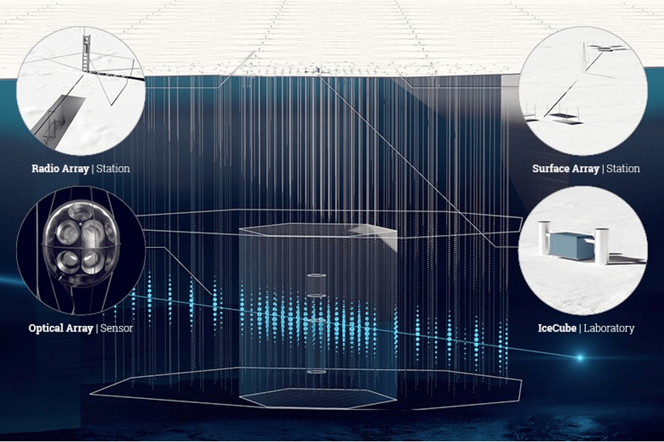</p> <div style="font-size: 16px; line-height: 1.2"><font size="3" class="credit">[DESY, Science Communication Lab]</font></div> <div class="fragment" data-fragment-index="5"> <div style="font-size: 16px; line-height: 1.2"><font size="3" class="credit">[Godot13 / Wikimedia Commons]</font></div> <h4 style="margin: 6px 0 0 0">Gentoo</h4> </div> </div> <div style="text-align: left; float: left; width: 56%; font-size: 0.75em"> <br> <div class="fragment" data-fragment-index="1"> <h3 style="margin: 0 0 6px 0"><span style="color: cyan">2025–26</span> <b>IceCube Upgrade</b></h3> <h4 style="margin: 0 0 0px 0"> • Seven dense strings, $\sim$700 new sensors, in the centre of IceCube</h4> <h4 style="margin: 0 0 10px 0"> • Sharper oscillation measurements and a better-calibrated ice model</h4> </div> <br> <div class="fragment" data-fragment-index="2"> <h3 style="margin: 0 0 6px 0"><span style="color: cyan">Optical</span> <b>8 km$^3$ of ice</b></h3> <h4 style="margin: 0 0 0px 0"> • $\sim$120 new strings, spread wider: 8$\times$ IceCube's volume</h4> <h4 style="margin: 0 0 10px 0"> • Sources $\sim$5$\times$ fainter than IceCube can see</h4> </div> <br> <div class="fragment" data-fragment-index="3"> <h3 style="margin: 0 0 6px 0"><span style="color: cyan">Radio</span> <b>500 km$^2$ near the surface</b></h3> <h4 style="margin: 0 0 0px 0"> • Radio pulses from EeV neutrinos, too rare for the optical array</h4> <h4 style="margin: 0 0 10px 0"> • Target: "cosmogenic" neutrinos, from cosmic rays hitting the CMB</h4> </div> <br> <div class="fragment" data-fragment-index="4"> <h3 style="margin: 0 0 6px 0"><span style="color: cyan">Status</span> <b>In NSF review</b></h3> <h4 style="margin: 0 0 10px 0"> • Halzen, on prize day: <i>"I'm working on a proposal"</i></h4> </div> </div>
# Francis Halzen <br> <div style="text-align: left; float: left; width: 50%"> <br> <h2>Heading</h2> <h3> • Dot point one</h3> <h3> • Dot point two</h3> <h3> • Dot point three</h3> <br> <div class="fragment"> <h2>Second heading</h2> <h3> • Dot point one</h3> <h3> • Dot point two</h3> </div> <!-- Halzen on Brian Keating's "Into the Impossible" podcast: recorded 2022 (full episode youtu.be/cun1zuEQTVU, chapter 00:00), clip reposted 8 Oct 2026. Wording is from the episode's own description/chapter title; check it against the 4-min clip before quoting --> <div class="fragment" style="font-size: 0.75em"> <br> <h4 style="margin: 0 0 6px 0"><i>"Physics is a miserable career, unless you are obsessed by it"</i> <font size="3" class="credit">[<a href="https://www.youtube.com/watch?v=g78rsgI6bw8">Into the Impossible</a>, B. Keating, 2022]</font></h4> </div> </div> <div style="text-align: center; float: right; width: 50%"> <br> <img src="../DarkMatter/img/xe-photoel.png" width="90%"><br> <font size="3">[Author <i>et al.</i>, Journal (Year)]</font> </div>
# Take-home <div style="text-align: left; float: left; width: 40%"> <br> ### Heading one * Dot point one * Dot point two <br> ### Heading two * Dot point one * Dot point two <br> <br> #### Venue, 2026 <br> #### Benjamin M. Roberts _University of Queensland, Australia_ </div> <div style="text-align: left; float: right; width: 60%"> <br> * Authors, [Journal **Vol**, Page (Year)](https://doi.org/), [[arXiv]](http://arxiv.org/abs/) <br> * Authors, [Journal **Vol**, Page (Year)](https://doi.org/), [[arXiv]](http://arxiv.org/abs/) </div>
<br><br><br><br><br> <br><br><br><br><br> <h1>Extra</h1>